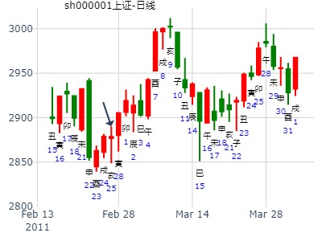
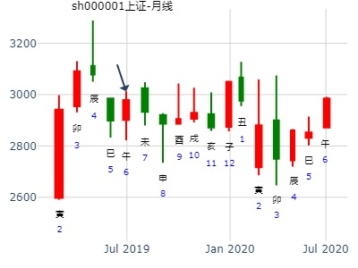

2011年元月上半月上海股市行情走势？
起卦方式：电脑自动 www.iqing.net 线上排盘系统
公历时间：2011年1月4日8时50分 星期二
干支：庚寅年 戊子月 己未日 戊辰时 (旬空：子丑)
神煞：驿马—巳 桃花—子 日禄—午 贵人—子，申
离宫：火水未济 震宫：雷水解
六神 伏 神 【本 卦】 【变 卦】
勾陈 ▅▅▅▅▅ 兄弟己巳火 应○→ ▅▅ ▅▅ 子孙庚戌土
朱雀 ▅▅ ▅▅ 子孙己未土 ▅▅ ▅▅ 妻财庚申金 应
青龙 ▅▅▅▅▅ 妻财己酉金 ▅▅▅▅▅ 兄弟庚午火
玄武 官鬼己亥水 ▅▅ ▅▅ 兄弟戊午火 世 ▅▅ ▅▅ 兄弟戊午火
白虎 ▅▅▅▅▅ 子孙戊辰土 ▅▅▅▅▅ 子孙戊辰土 世
螣蛇 ▅▅ ▅▅ 父母戊寅木 ▅▅ ▅▅ 父母戊寅木
|
凯普生物到月底走势。 未济之解。.md
时间: 2018-01-17
干支: 丁酉年癸丑月己酉日 (旬空: 寅卯 )
火水未济 雷水解
六神 伏神 本 卦 变 卦
勾陈 ▅▅▅▅▅ 兄弟巳火 应Ｏ→ ▅▅ ▅▅ 子孙戌土
朱雀 ▅▅ ▅▅ 子孙未土 ▅▅ ▅▅ 妻财申金 应
青龙 ▅▅▅▅▅ 妻财酉金 ▅▅▅▅▅ 兄弟午火
玄武 官鬼亥水▅▅ ▅▅ 兄弟午火 世 ▅▅ ▅▅ 兄弟午火
白虎 ▅▅▅▅▅ 子孙辰土 ▅▅▅▅▅ 子孙辰土 世
腾蛇 ▅▅ ▅▅ 父母寅木 ▅▅ ▅▅ 父母寅木
短中线最后一跌，六十四卦最后一卦最后一爻。丑月未土子 孙月破无力，须出月见底。
2月28日-3月4日大盘涨跌卦
占事：2月28日-3月4日大盘涨跌
公历时间：2011年2月25日16时15分 星期五
干支：辛卯年 庚寅月 辛亥日 丙申时 (旬空：寅卯)
神煞：驿马—巳 桃花—子 日禄—酉 贵人—寅，午
离宫：火水未济 震宫：雷水解
六神 伏 神 【本 卦】 【变 卦】
螣蛇 ▅▅▅▅▅ 兄弟己巳火 应○→ ▅▅ ▅▅ 子孙庚戌土
勾陈 ▅▅ ▅▅ 子孙己未土 ▅▅ ▅▅ 妻财庚申金 应
朱雀 ▅▅▅▅▅ 妻财己酉金 ▅▅▅▅▅ 兄弟庚午火
青龙 官鬼己亥水 ▅▅ ▅▅ 兄弟戊午火 世 ▅▅ ▅▅ 兄弟戊午火
玄武 ▅▅▅▅▅ 子孙戊辰土 ▅▅▅▅▅ 子孙戊辰土 世
白虎 ▅▅ ▅▅ 父母戊寅木 ▅▅ ▅▅ 父母戊寅木

2016丙申年上证指数每天预测实战探索（每天在回复中更新）
000767今天早盘进的早了些。生：没填 年 性别：男
占事：000767智度投资下午涨跌
排卦：元亨利贞网六爻在线排盘系统 http://www.china95.net
公历起卦时间：2016年2月19日11时54分 (电脑自动)
干支：丙申年 庚寅月 辛未日 甲午时 （日空：戌亥）
离宫：火水未济 震宫：雷水解
六神 伏神 本 卦 变 卦
腾蛇 兄弟己巳火 ▅▅▅▅▅ 应 ○→ 子孙庚戌土 ▅▅ ▅▅
勾陈 子孙己未土 ▅▅ ▅▅ 妻财庚申金 ▅▅ ▅▅ 应
朱雀 妻财己酉金 ▅▅▅▅▅ 兄弟庚午火 ▅▅▅▅▅
青龙 官鬼己亥水 兄弟戊午火 ▅▅ ▅▅ 世 兄弟戊午火 ▅▅ ▅▅
玄武 子孙戊辰土 ▅▅▅▅▅ 子孙戊辰土 ▅▅▅▅▅ 世
白虎 父母戊寅木 ▅▅ ▅▅ 父母戊寅木 ▅▅ ▅▅
方大炭素辛丑年哪月顶？
出生：2021 年 性别：男 占事：没填
排卦：元亨利贞网六爻在线排盘系统 https://www.china95.net
公历起卦时间：2021年2月4日12时22分 (电脑自动)
干支：辛丑年 庚寅月 癸未日 戊午时 （日空：申酉）
离宫：火水未济 震宫：雷水解
六神 伏神 本 卦 变 卦
白虎 兄弟己巳火 ▅▅▅▅▅ 应 ○→ 子孙庚戌土 ▅▅ ▅▅
螣蛇 子孙己未土 ▅▅ ▅▅ 妻财庚申金 ▅▅ ▅▅ 应
勾陈 妻财己酉金 ▅▅▅▅▅ 兄弟庚午火 ▅▅▅▅▅
朱雀 官鬼己亥水 兄弟戊午火 ▅▅ ▅▅ 世 兄弟戊午火 ▅▅ ▅▅
青龙 子孙戊辰土 ▅▅▅▅▅ 子孙戊辰土 ▅▅▅▅▅ 世
玄武 父母戊寅木 ▅▅ ▅▅ 父母戊寅木 ▅▅ ▅▅
占事：2019股市财运如何
公历起卦时间：2019年3月14日15时43分 (按公历时间起卦)
干支：己亥年 丁卯月 庚戌日 甲申时 （日空：寅卯）
离宫：火水未济 震宫：雷水解
六神 伏神 本 卦 变 卦
腾蛇 兄弟己巳火 ▅▅▅▅▅ 应 ○→ 子孙庚戌土 ▅▅ ▅▅
勾陈 子孙己未土 ▅▅ ▅▅ 妻财庚申金 ▅▅ ▅▅ 应
朱雀 妻财己酉金 ▅▅▅▅▅ 兄弟庚午火 ▅▅▅▅▅
青龙 官鬼己亥水 兄弟戊午火 ▅▅ ▅▅ 世 兄弟戊午火 ▅▅ ▅▅
玄武 子孙戊辰土 ▅▅▅▅▅ 子孙戊辰土 ▅▅▅▅▅ 世
白虎 父母戊寅木 ▅▅ ▅▅ 父母戊寅木 ▅▅ ▅▅
兄弟入墓，辰月冲墓见顶，巳月兄弟发威大跌。
午月虽为兄弟持世，但是见底。
下周热点。未济之解
时间: 2022-03-17
干支: 壬寅年癸卯月己巳日 (旬空: 戌亥 )
火水未济 雷水解
六神 伏神 本 卦 变 卦
勾陈 ▅▅▅▅▅ 兄弟巳火 应Ｏ→ ▅▅ ▅▅ 子孙戌土
朱雀 ▅▅ ▅▅ 子孙未土 ▅▅ ▅▅ 妻财申金 应
青龙 ▅▅▅▅▅ 妻财酉金 ▅▅▅▅▅ 兄弟午火
玄武 官鬼亥水▅▅ ▅▅ 兄弟午火 世 ▅▅ ▅▅ 兄弟午火
白虎 ▅▅▅▅▅ 子孙辰土 ▅▅▅▅▅ 子孙辰土 世
腾蛇 ▅▅ ▅▅ 父母寅木 ▅▅ ▅▅ 父母寅木
亨，小狐汔济，濡其尾，无攸利。
初六：濡其尾，吝。
九二：曳其轮，贞吉。
六三：未济，征凶，利涉大川。
九四：贞吉，悔亡，震用伐鬼方，三年有赏于大国。
六五：贞吉，无悔，君子之光，有孚，吉。
上九：有孚于饮酒，无咎，濡其首，有孚失是。
彖︰未济，亨；柔得中也。小狐汔济，未出中也。濡其尾，无攸利；不续终也。虽不当位，刚柔应也。
主题：手摇上海股市在辰月的行情走势如何
壬寅 甲辰 己丑 己巳 (午未空) 壬寅年二月初五(2022/04/06 09:16:04)
火水未济 雷水解
勾陈 兄弟巳火 ○ 应 子孙戌土 ∥
朱雀 子孙未土 ∥ 妻财申金 ∥ 应
青龙 妻财己酉 ／ 兄弟庚午 ／
官鬼亥水：玄武 兄弟午火 ∥ 世 兄弟午火 ∥
白虎 子孙辰土 ／ 子孙辰土 ／ 世
腾蛇 父母寅木 ∥ 父母寅木 ∥
问：6月30，SZZS收盘！!
起卦方式：手工指定 (周易世界 www.zhouyiworld.com)
公历时间：2020年5月29日19时27分
干 支：庚子年 辛巳月 壬申日 庚戌时
旬 空：辰巳 申酉 戌亥 寅卯
离宫：火水未济 震宫：雷水解
六神 伏 神 【本 卦】 【变 卦】
白虎 ▄▄▄▄▄ 兄弟己巳火 应O-> ▄▄ ▄▄ 子孙庚戌土
螣蛇 ▄▄ ▄▄ 子孙己未土 ▄▄ ▄▄ 妻财庚申金 应
勾陈 ▄▄▄▄▄ 妻财己酉金 ▄▄▄▄▄ 兄弟庚午火
朱雀 官鬼己亥水 ▄▄ ▄▄ 兄弟戊午火 世 ▄▄ ▄▄ 兄弟戊午火
青龙 ▄▄▄▄▄ 子孙戊辰土 ▄▄▄▄▄ 子孙戊辰土 世
玄武 ▄▄ ▄▄ 父母戊寅木 ▄▄ ▄▄ 父母戊寅木
占事：测6月10到8月8日上证及热点板块，李焱
公历起卦时间：2019年6月7日14时50分 (手工指定)
干支：己亥年 庚午月 乙亥日 癸未时 （日空：申酉）
离宫：火水未济 震宫：雷水解
六神 伏神 本 卦 变 卦
玄武 兄弟己巳火 ▅▅▅▅▅ 应 ○→ 子孙庚戌土 ▅▅ ▅▅
白虎 子孙己未土 ▅▅ ▅▅ 妻财庚申金 ▅▅ ▅▅ 应
腾蛇 妻财己酉金 ▅▅▅▅▅ 兄弟庚午火 ▅▅▅▅▅
勾陈 官鬼己亥水 兄弟戊午火 ▅▅ ▅▅ 世 兄弟戊午火 ▅▅ ▅▅
朱雀 子孙戊辰土 ▅▅▅▅▅ 子孙戊辰土 ▅▅▅▅▅ 世
青龙 父母戊寅木 ▅▅ ▅▅ 父母戊寅木 ▅▅ ▅▅
主卦火水未济,说明下跌还未完成,6月继续下跌可能性大.变卦雷水解,主灾难消除,7月出现低点止跌回升可能性大
兄弟持午火持世临月,且兄弟巳火发动不利于前,化库有利于后
兄弟午火为空方,主做空 力量为中小盘股票,官亥水临日克兄弟,有官方护盘之股票可以关注,主要
白酒依然为热点板块。
股市下周热点，未济之豫.note
卯日冲实酉财，大涨。
六十四卦最后一卦最后一爻，容易是最后一跌见底。


601127 小康 1 号收 57.79 测3号周五收盘升跌？
壬寅 乙巳 乙酉 丁亥 (午未空) 壬寅年四月初二(2022/06/01 22:39:41)
火水未济 雷水解
玄武 兄弟巳火 ○ 应 子孙戌土 ∥
白虎 子孙未土 ∥ 妻财申金 ∥ 应
腾蛇 妻财酉金 ／ 兄弟午火 ／ 官鬼亥水：
勾陈 兄弟午火 ∥ 世 兄弟午火 ∥
朱雀 子孙辰土 ／ 子孙辰土 ／ 世
青龙 父母寅木 ∥ 父母寅木 ∥
4爻妻财酉金.在月休， 值日 .日月交 巳火 ○ 应 动克妻财酉金 . 日月交战 ，有振荡波动 3号亥日 又耗财 看跌
王请九戒卜卦 占事：600196 两周
公历时间：2014年7月7日14时3分
干 支：甲午年 辛未月 己卯日 辛未时 (申酉)
离宫：火水未济 震宫：雷水解
六神 伏 神 【本 卦】 【变 卦】
勾陈 ▄▄▄▄▄ 兄弟己巳火 应O-> ▄▄ ▄▄ 子孙庚戌土
朱雀 ▄▄ ▄▄ 子孙己未土 ▄▄ ▄▄ 妻财庚申金 应
青龙 ▄▄▄▄▄ 妻财己酉金 ▄▄▄▄▄ 兄弟庚午火
玄武 官鬼己亥水 ▄▄ ▄▄ 兄弟戊午火 世 ▄▄ ▄▄ 兄弟戊午火
白虎 ▄▄▄▄▄ 子孙戊辰土 ▄▄▄▄▄ 子孙戊辰土 世
螣蛇 ▄▄ ▄▄ 父母戊寅木 ▄▄ ▄▄ 父母戊寅木
此卦最后一跌，这二周为底。
上九：有孚于饮酒，无咎，濡其首，有孚失是。
象曰：饮酒濡首，亦不知节也。
次日即冲墓不吉。
己日出墓跌，午日助兄跌。戌日墓兄弟，涨。亥日冲爻出墓也涨。
子日冲实世爻午火则跌。
王 占事：复星医药何时开涨？
公历起卦时间：2014年7月8日13时58分 (在线摇卦)
干支：甲午年 辛未月 庚辰日 癸未时 （日空：申酉）
艮宫：火泽睽 离宫：火风鼎
六神 伏神 本 卦 变 卦
腾蛇 父母己巳火 ▅▅▅▅▅ 父母己巳火 ▅▅▅▅▅
勾陈 妻财丙子水 兄弟己未土 ▅▅ ▅▅ 兄弟己未土 ▅▅ ▅▅ 应
朱雀 子孙己酉金 ▅▅▅▅▅ 世 子孙己酉金 ▅▅▅▅▅
青龙 兄弟丁丑土 ▅▅ ▅▅ ╳→ 子孙辛酉金 ▅▅▅▅▅
玄武 官鬼丁卯木 ▅▅▅▅▅ 妻财辛亥水 ▅▅▅▅▅ 世
白虎 父母丁巳火 ▅▅▅▅▅ 应 ○→ 兄弟辛丑土 ▅▅ ▅▅
巳酉丑三合局，酉空，待酉月开涨。
初断：
财月克日墓，又克于飞神，弱极。
巳酉丑三合子孙局，但是丑月破，酉旬空，须等出空才有戏。
关键点看下周出空，以及丑冲未冲飞时，还有下周的亥子日出伏时。
此处还有一病：巳酉丑三合，酉被辰日合，合待冲，或是等戌月。


8月8日-8月9日上证走势(请高手指教)
2012-08-07
干 支：壬辰年 戊申月 庚子日 丁亥时
旬 空：午未 寅卯 (辰巳) 午未
离宫：火水未济 震宫：雷水解
六神 伏 神 【本 卦】 【变 卦】
螣蛇 ▄▄▄▄▄ 兄弟己巳火 应 O ▄▄ ▄▄ 子孙庚戌土
勾陈 ▄▄ ▄▄ 子孙己未土 ▄▄ ▄▄ 妻财庚申金 应
朱雀 ▄▄▄▄▄ 妻财己酉金 ▄▄▄▄▄ 兄弟庚午火
青龙 官鬼己亥水 ▄▄ ▄▄ 兄弟戊午火 世 ▄▄ ▄▄ 兄弟戊午火
玄武 ▄▄▄▄▄ 子孙戊辰土 ▄▄▄▄▄ 子孙戊辰土 世
白虎 ▄▄ ▄▄ 父母戊寅木 ▄▄ ▄▄ 父母戊寅木 |
世爻日破。应兄入墓。财值月。涨（当中的辰日冲墓，接下来就是兄弟的己午日，故转折快）
反弹的最后一涨。
瑞泰科技在本周的走势---乾隆通宝手摇卦
| 主题：瑞泰科技在本周的走势---乾隆通宝手摇卦
甲午 壬申 辛酉 甲午 (子丑空)
甲午年七月廿三(2014/08/18 12:50:00)
火水未济 雷水解
腾蛇 兄弟巳火 ○ 应 子孙戌土 ∥
勾陈 子孙未土 ∥ 妻财申金 ∥ 应
朱雀 妻财酉金 ／ 兄弟午火 ／
官鬼亥水：
青龙 兄弟午火 ∥ 世 兄弟午火 ∥
玄武 子孙辰土 ／ 子孙辰土 ／ 世
白虎 父母寅木 ∥ 父母寅木 ∥ |
亥日大涨，应在冲爻出墓是跌，应在冲爻日破是涨。
辰巳二天冲墓又兄弟值日，连在一起为转折点

8月11号趋势
求测人：某人，女，辛亥(1971年)，电脑摇卦(起卦方式)
占问事宜：明天大盘
公历：2015年8月10日19时12分，星期一。
干支：乙未年 甲申月 戊午日 壬戌时 (卦身：寅)
主变卦 火水未济(离宫) 之 雷水解(震宫) [空亡:子、丑]
朱雀 ▅▅▅▅▅○兄弟己巳火 应 ▅▅ ▅▅ 子孙庚戌土
青龙 ▅▅ ▅▅ 子孙己未土 ▅▅ ▅▅ 妻财庚申金 应
玄武 ▅▅▅▅▅ 妻财己酉金 ▅▅▅▅▅ 兄弟庚午火
白虎 官鬼己亥水 ▅▅ ▅▅ 兄弟戊午火 世 ▅▅ ▅▅ 兄弟戊午火
螣蛇 ▅▅▅▅▅ 子孙戊辰土 ▅▅▅▅▅ 子孙戊辰土 世
勾陈 ▅▅ ▅▅ 父母戊寅木 ▅▅ ▅▅ 父母戊寅木
2015年8月30日16时31分 nmbssjmnf
干 支：乙未年 甲申月 戊寅日 庚申时
旬 空：辰巳 午未 (申酉) 子丑
离宫：火水未济 震宫：雷水解
朱雀 ▄▄▄▄▄ 兄弟己巳火 应O-> ▄▄ ▄▄ 子孙庚戌土
青龙 ▄▄ ▄▄ 子孙己未土 ▄▄ ▄▄ 妻财庚申金 应
玄武 ▄▄▄▄▄ 妻财己酉金 ▄▄▄▄▄ 兄弟庚午火
白虎 官鬼己亥水 ▄▄ ▄▄ 兄弟戊午火 世 ▄▄ ▄▄ 兄弟戊午火
螣蛇 ▄▄▄▄▄ 子孙戊辰土 ▄▄▄▄▄ 子孙戊辰土 世
勾陈 ▄▄ ▄▄ 父母戊寅木 ▄▄ ▄▄ 父母戊寅木
上九：有孚于饮酒，无咎，濡其首，有孚失是。象曰：饮酒濡首，亦不知节也。
长城汽车未来几个月走势。未济之解
时间: 2020-08-03
干支: 庚子年癸未月戊寅日 (旬空: 申酉 )
火水未济 雷水解
六神 伏神 本 卦 变 卦
朱雀 ▅▅▅▅▅ 兄弟巳火 应Ｏ→ ▅▅ ▅▅ 子孙戌土
青龙 ▅▅ ▅▅ 子孙未土 ▅▅ ▅▅ 妻财申金 应
玄武 ▅▅▅▅▅ 妻财酉金 ▅▅▅▅▅ 兄弟午火
白虎 官鬼亥水▅▅ ▅▅ 兄弟午火 世 ▅▅ ▅▅ 兄弟午火
腾蛇 ▅▅▅▅▅ 子孙辰土 ▅▅▅▅▅ 子孙辰土 世
勾陈 ▅▅ ▅▅ 父母寅木 ▅▅ ▅▅ 父母寅木
64卦最后一卦最后一爻，即将开始新的生活。
兄弟值班的月巳午月结束，财爻即将值班，大涨在即。
822周热点。 未济之解。--利涉大川。
时间: 2022-08-19
干支: 壬寅年戊申月甲辰日 (旬空: 寅卯 )
火水未济 雷水解
六神 伏神 本 卦 变 卦
玄武 ▅▅▅▅▅ 兄弟巳火 应Ｏ→ ▅▅ ▅▅ 子孙戌土
白虎 ▅▅ ▅▅ 子孙未土 ▅▅ ▅▅ 妻财申金 应
腾蛇 ▅▅▅▅▅ 妻财酉金 ▅▅▅▅▅ 兄弟午火
勾陈 官鬼亥水▅▅ ▅▅ 兄弟午火 世 ▅▅ ▅▅ 兄弟午火
朱雀 ▅▅▅▅▅ 子孙辰土 ▅▅▅▅▅ 子孙辰土 世
青龙 ▅▅ ▅▅ 父母寅木 ▅▅ ▅▅ 父母寅木
上九：有孚于饮酒，无咎，濡其首，有孚失是。
2022-08-19
参考同月2020-08-03 天同长城汽车的卦，就是交通工具。
作者：泰山建站 占事：【大盘】9月9日走势（虽然发的有点早）
公历起卦时间：2013年9月6日15时4分 (在线摇卦)
白露：2013年09月07日20时33分
干支：癸巳年 庚申月 乙亥日 甲申时 （日空：申酉）
神煞：驿马－巳 桃花－子 日禄－卯 贵人－子，申
离宫：火水未济 震宫：雷水解
六神 伏神 本 卦 变 卦
玄武 兄弟己巳火 ▅▅▅▅▅ 应 ○→ 子孙庚戌土 ▅▅ ▅▅
白虎 子孙己未土 ▅▅ ▅▅ 妻财庚申金 ▅▅ ▅▅ 应
腾蛇 妻财己酉金 ▅▅▅▅▅ 兄弟庚午火 ▅▅▅▅▅
勾陈 官鬼己亥水 兄弟戊午火 ▅▅ ▅▅ 世 兄弟戊午火 ▅▅ ▅▅
朱雀 子孙戊辰土 ▅▅▅▅▅ 子孙戊辰土 ▅▅▅▅▅ 世
青龙 父母戊寅木 ▅▅ ▅▅ 父母戊寅木 ▅▅ ▅▅
申月酉旺，逢寅卯逢冲而大涨。
暴涨3.39%。
主题：9月1日-9月6日黄金的走势 1286
甲午 壬申 乙亥 庚辰 (申酉空) 甲午年八月初八(2014/09/01 08:53:48)
火水未济 雷水解
玄武 兄弟辛巳 ○ 应 子孙丙戌 ∥
白虎 子孙癸未 ∥ 妻财甲申 ∥ 应
腾蛇 妻财乙酉 ／ 兄弟壬午 ／
官鬼丁亥：勾陈 兄弟壬午 ∥ 离 兄弟壬午 ∥
朱雀 子孙庚辰 ／ 子孙庚辰 ／ 震
青龙 父母戊寅 ∥ 父母戊寅 ∥
603158腾龙股份，未济之解。兄弟入墓。
时间: 2021-11-03 16时46分
干支: 辛丑年戊戌月乙卯日 (旬空: 子丑 )
火水未济 雷水解
六神 伏神 本 卦 变 卦
玄武 ▅▅▅▅▅ 兄弟巳火 应Ｏ→ ▅▅ ▅▅ 子孙戌土
白虎 ▅▅ ▅▅ 子孙未土 ▅▅ ▅▅ 妻财申金 应
腾蛇 ▅▅▅▅▅ 妻财酉金 ▅▅▅▅▅ 兄弟午火
勾陈 官鬼亥水▅▅ ▅▅ 兄弟午火 世 ▅▅ ▅▅ 兄弟午火
朱雀 ▅▅▅▅▅ 子孙辰土 ▅▅▅▅▅ 子孙辰土 世
青龙 ▅▅ ▅▅ 父母寅木 ▅▅ ▅▅ 父母寅木
2021-11-03
兄弟发动时，申酉妻财值班不涨，小跌。
18日午火持世，跌。10，11，12，兄弟入墓，被冲克。涨。
拓邦1210二周卦，未济之解。
时间: 2021-12-10
干支: 辛丑年庚子月壬辰日 (旬空: 午未 )
火水未济 雷水解
六神 伏神 本 卦 变 卦
白虎 ▅▅▅▅▅ 兄弟巳火 应Ｏ→ ▅▅ ▅▅ 子孙戌土
腾蛇 ▅▅ ▅▅ 子孙未土 ▅▅ ▅▅ 妻财申金 应
勾陈 ▅▅▅▅▅ 妻财酉金 ▅▅▅▅▅ 兄弟午火
朱雀 官鬼亥水▅▅ ▅▅ 兄弟午火 世 ▅▅ ▅▅ 兄弟午火
青龙 ▅▅▅▅▅ 子孙辰土 ▅▅▅▅▅ 子孙辰土 世
玄武 ▅▅ ▅▅ 父母寅木 ▅▅ ▅▅ 父母寅木
此卦为紫气东来摇卦。前期不一定好解释。申日可用父母寅暗动解释。
辰日冲墓，报废墓。